I love taking pictures, my journey started a few years ago with a small analog camera I bought on ebay, a Konica MT7. Today, this journey is continuing with this small camera as long as with a FujiFilm X-T30 iii.
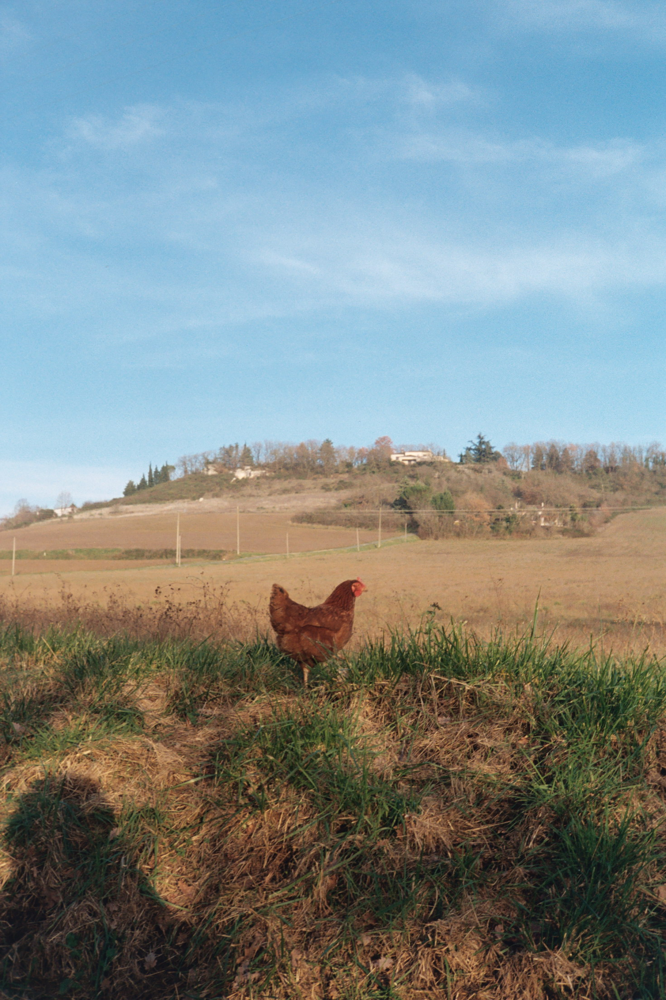
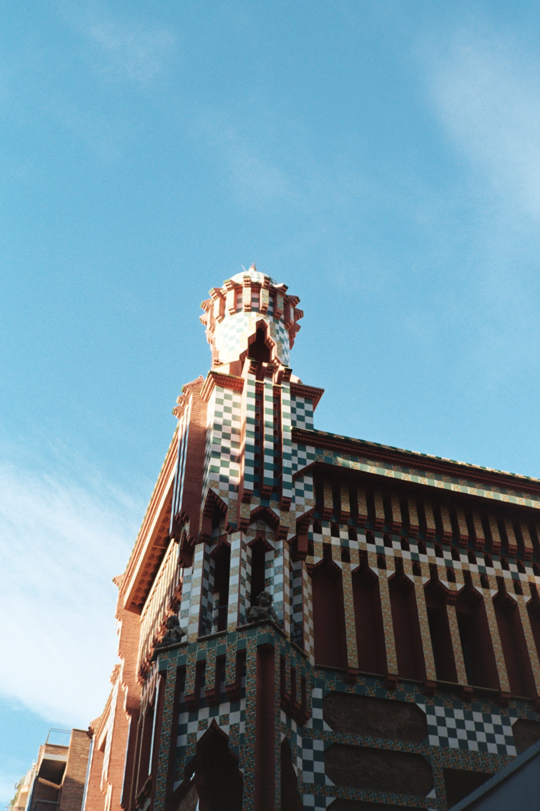
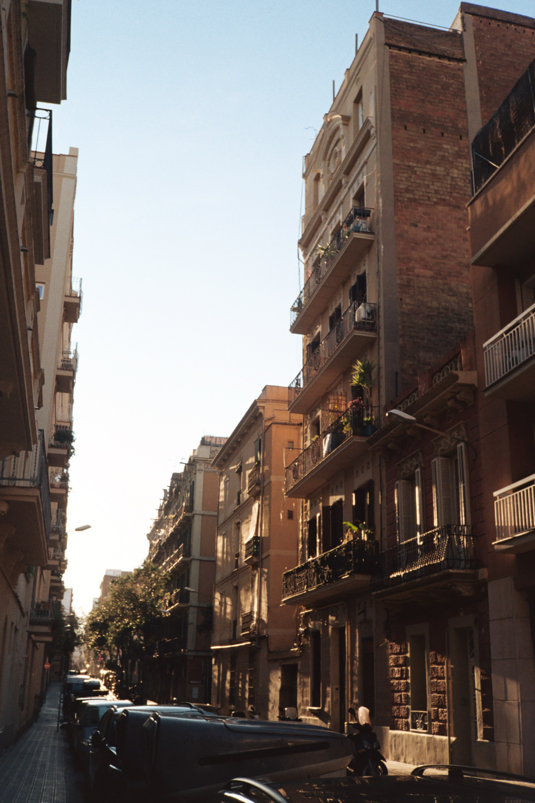
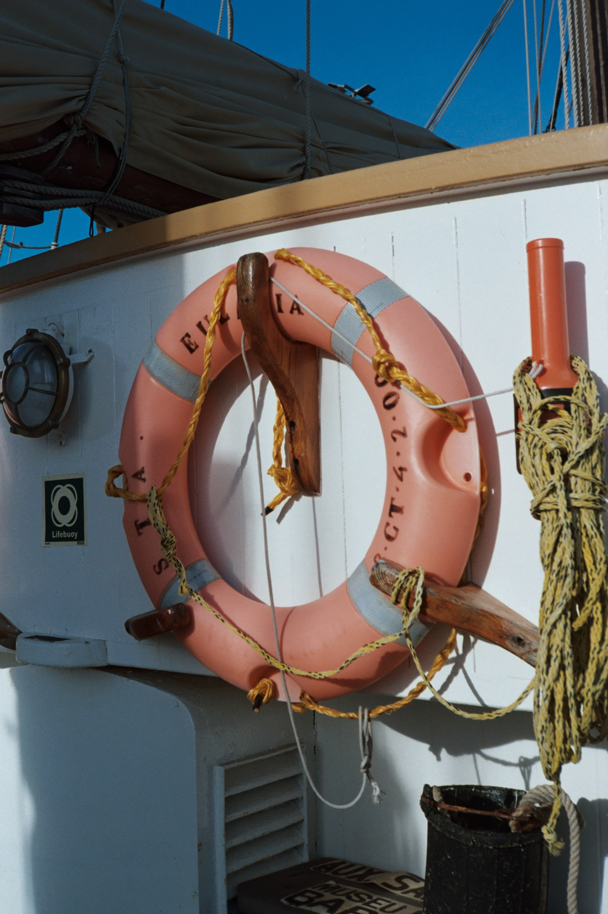
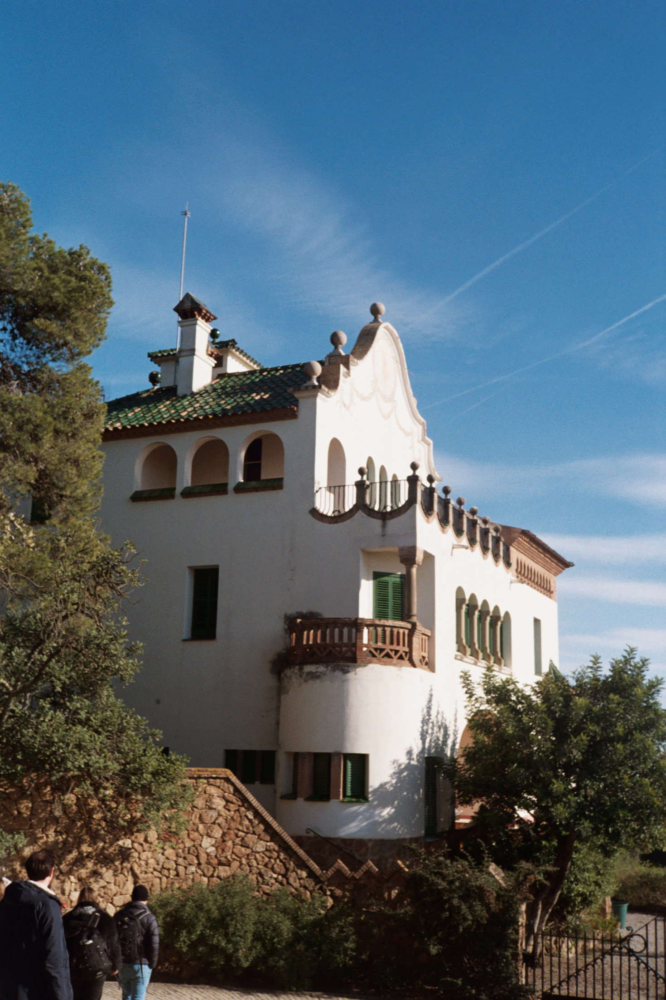
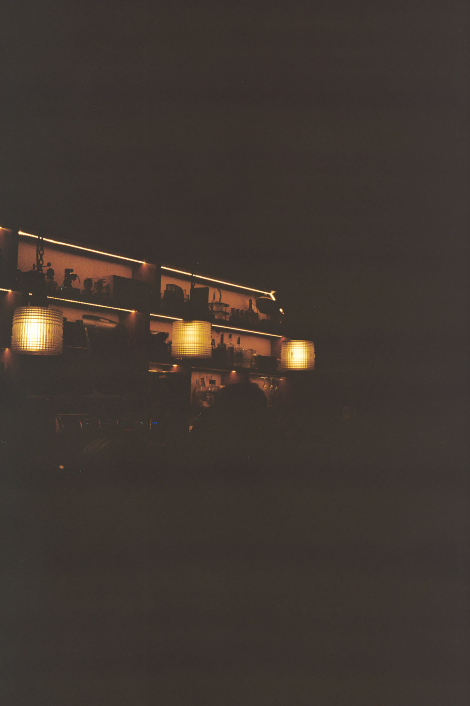
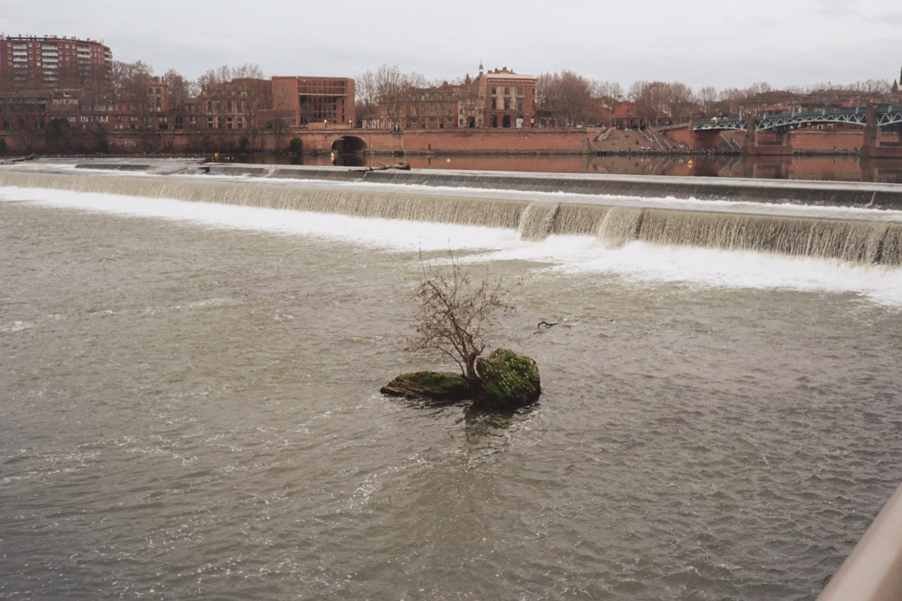
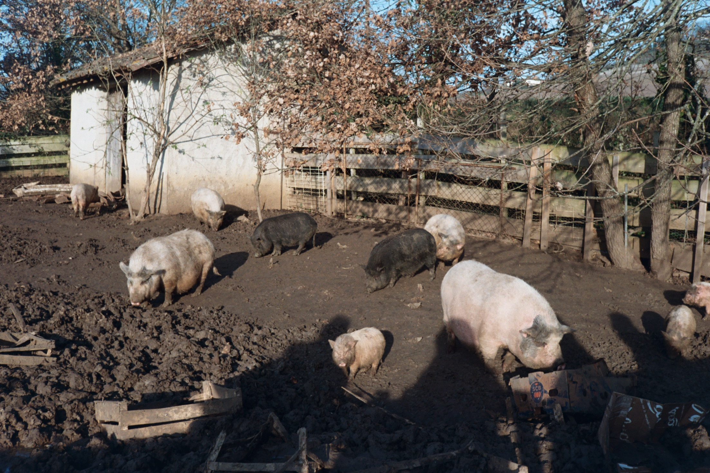
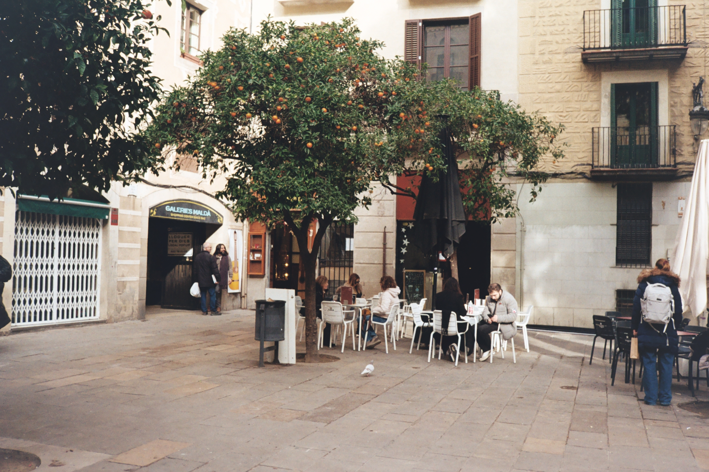
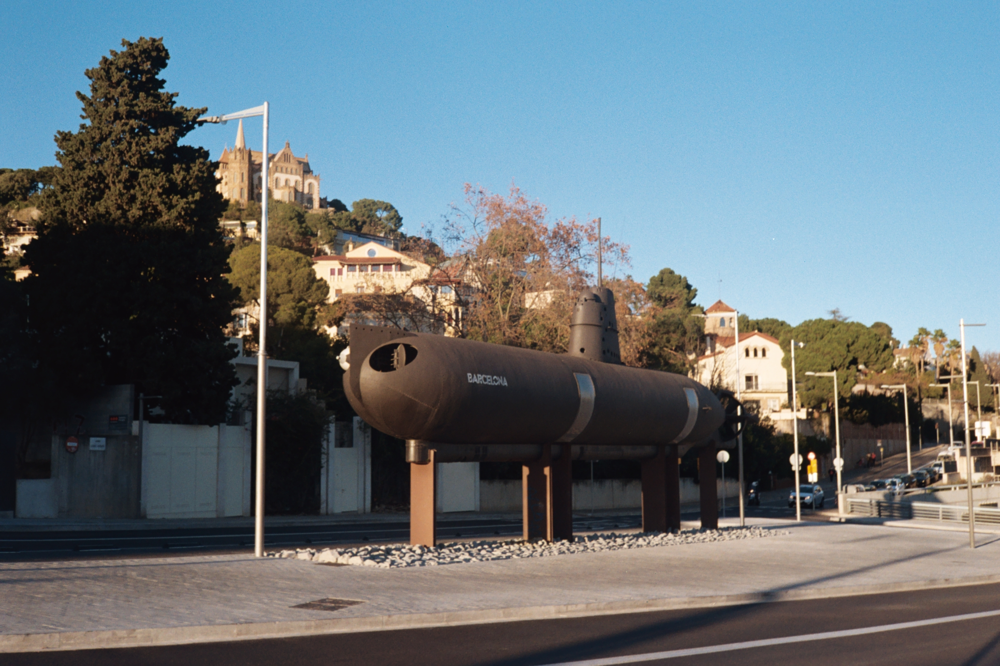
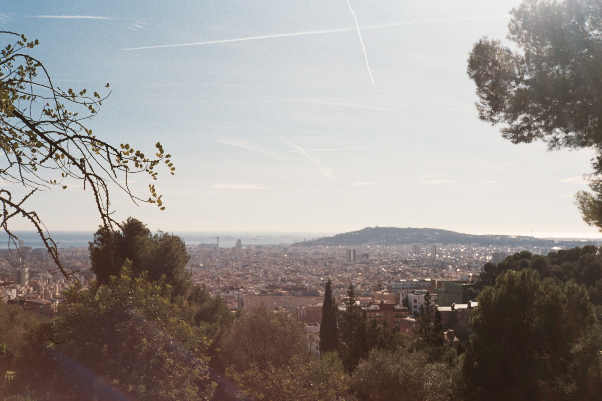